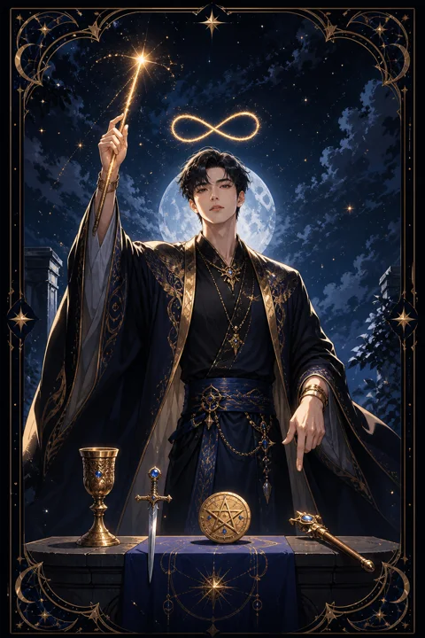

I 마법사 카드 — 의지를 현실로 바꾸는 힘
마법사 카드 한눈에 보기
마법사 카드 상징 읽기

동네보살의 카드 그림은 전통 라이더–웨이트 덱의 뜻을 새 그림으로 옮긴 것입니다. 아래 상징 설명은 전통 덱의 그림을 기준으로 합니다.
마법사는 한 손으로 지팡이를 들어 하늘을 가리키고, 다른 손으로는 땅을 가리킵니다. 위에서 받은 뜻을 아래의 현실로 옮기는 통로가 바로 자신이라는 선언입니다.
탁자 위에 놓인 지팡이, 잔, 검, 동전은 불과 물과 공기와 흙, 곧 세상을 이루는 네 원소를 뜻합니다. 무엇이든 만들어 낼 재료가 이미 눈앞에 다 있다는 의미입니다.
머리 위에 뜬 무한대 기호는 끝없이 이어지는 가능성과 집중력을 나타냅니다. 발밑에 핀 붉은 장미와 흰 백합은 열정과 순수한 의도가 함께 자라야 진짜 마법이 된다는 것을 알려 줍니다. 허리에 두른 뱀 모양 띠는 스스로를 새롭게 하는 힘입니다.
마법사가 입은 흰 속옷과 붉은 겉옷은 순수한 의도와 행동하는 열정이 한 몸에 겹쳐 있음을 보여 줍니다. 배경을 가득 채운 노란 하늘은 맑게 깨어 있는 의식을 뜻합니다. 머리 위 덩굴과 꽃은 생각이 실제 결과로 피어나는 모습을 그려 낸 것입니다.
마법사 카드 정방향 뜻
정방향 마법사는 생각만 하던 일을 실제로 만들어 낼 때가 왔다는 신호입니다. 필요한 지식, 인맥, 기술은 생각보다 많이 갖춰져 있고, 부족한 것은 오직 첫 동작뿐입니다.
이 카드는 막연한 행운보다 스스로의 의지와 솜씨로 결과를 이끌어 내는 힘을 강조합니다. 말솜씨와 설득력도 빛나는 시기라서 발표, 면접, 협상처럼 자신을 보여 주는 자리에 유리합니다.
여러 도구를 한꺼번에 쓰기보다 지금 가장 잘하는 한 가지에 힘을 모으면 효과가 커집니다. 목표를 구체적인 문장으로 적고 오늘 할 수 있는 작은 행동부터 시작해 보세요. 손을 움직이는 순간 흩어져 있던 재료들이 하나의 모양을 갖추기 시작합니다. 누군가 대신 문을 열어 주기를 기다리는 대신 직접 손잡이를 돌리는 사람에게 이 카드의 힘이 흐릅니다. 시작의 기세가 좋을 때 마무리 날짜까지 함께 정해 두면 결과가 더 선명해집니다.
마법사 카드 역방향 뜻
역방향 마법사는 가진 재주가 엉뚱한 곳으로 새어 나가는 모습입니다. 여러 가지를 동시에 벌여 놓고 어느 것도 끝내지 못하거나, 계획은 화려한데 손이 움직이지 않는 상태일 수 있습니다.
또 말을 앞세워 상대를 현혹하거나 반대로 누군가의 달콤한 말솜씨에 넘어갈 수 있다는 경고도 담겨 있습니다. 지나치게 그럴듯한 제안이라면 한 발 물러서서 사실을 확인하는 편이 좋습니다.
하지만 이 카드는 능력이 없다는 뜻이 아닙니다. 탁자 위 도구는 여전히 그대로 놓여 있습니다. 흩어진 관심을 하나로 모으고 의도를 정직하게 다듬으면 멈췄던 흐름은 다시 살아납니다. 자신감이 떨어져 재능을 숨기고 있다면 작은 성공부터 쌓아 보세요. 시작한 일을 끝까지 해내지 못해 스스로에게 실망했다면, 규모를 줄여 한 가지만 완성하는 경험부터 되찾는 것이 좋습니다. 완성의 감각이 돌아오면 재능도 제자리를 찾습니다.
연애에서 마법사 카드
솔로라면 먼저 움직이는 쪽이 인연을 만드는 시기입니다. 마음에 드는 사람이 있다면 기다리기보다 가벼운 연락이나 약속을 제안해 보세요. 자신의 매력을 자연스럽게 드러낼 기회가 많아 소개나 모임에서 좋은 인상을 남기기 쉽습니다.
연애 중이라면 관계를 원하는 방향으로 이끌 수 있는 힘이 당신에게 있습니다. 서운했던 점이나 바라는 점을 분명한 말로 전하면 상대도 반응합니다. 다만 상대의 마음을 계산하고 조종하려는 태도가 섞이면 신뢰가 금방 흔들립니다. 기술보다 진심을 앞에 두는 것이 이 카드가 말하는 사랑의 마법입니다. 함께 무언가를 만드는 취미를 시작하는 것도 좋습니다. 솔로일 때 이 카드가 나오면 외모보다 대화의 재치와 센스가 호감을 이끌어 내니, 상대의 이야기에 흥미롭게 반응하는 연습을 해 보세요. 연애 중일 때는 작은 이벤트나 손편지처럼 직접 손을 써서 마음을 보여 주는 방식이 특히 잘 통합니다.
재회·속마음 질문에서 마법사 카드
재회 질문에서 마법사가 나오면 다시 연결될 수단과 계기가 당신 손안에 있다는 뜻입니다. 상대는 당신의 달라진 모습이나 능력에 관심을 가질 여지가 있습니다. 먼저 연락하는 쪽이 흐름을 쥐게 되므로, 지난 감정을 늘어놓기보다 짧고 분명한 말로 다가가는 편이 좋습니다. 다만 상대의 반응을 끌어내려 꾸며 낸 말은 오래가지 못한다는 점을 기억해 두세요. 헤어진 뒤 스스로 성장한 부분이 있다면 그 변화를 자연스럽게 보여 줄 기회를 만들어 보세요. 상대는 말보다 달라진 행동에서 다시 만날 이유를 찾을 가능성이 큽니다. 다만 연락의 목적이 상대를 돌려세우는 기술에만 머문다면 관계는 금방 예전 자리로 돌아갑니다.
일·금전에서 마법사 카드
일과 직장에서는 실력을 드러낼 무대가 열리는 카드입니다. 기획안 발표, 새로운 기술 습득, 개인 브랜드 만들기처럼 스스로 주도하는 일에 특히 힘이 실립니다. 윗사람이나 고객에게 능력을 증명할 기회가 온다면 망설이지 말고 준비한 것을 꺼내 보세요.
금전 면에서는 가진 기술을 수입으로 바꾸는 흐름이 좋습니다. 부업이나 재능 판매처럼 자신의 손으로 버는 방법을 고민해 볼 만합니다. 다만 한꺼번에 여러 곳에 손대면 힘이 분산되니 우선순위를 정하고, 말만 번지르르한 수익 제안은 조심하는 것이 좋습니다. 회의나 보고 자리에서 망설이던 의견이 있다면 이번에는 분명하게 말해 보세요. 준비한 만큼 설득력이 실리는 때라서 작은 발언 하나가 새 역할로 이어질 수 있습니다.
마법사 카드는 예일까 아니오일까
필요한 도구와 능력이 이미 갖춰졌다는 카드여서 행동에 옮기면 이룰 수 있다는 긍정으로 봅니다. 역방향이라면 준비는 되어 있어도 집중이 흩어졌거나 의도가 순수하지 않다는 뜻이라 조건부로 바뀝니다.
자주 묻는 질문
마법사 카드 역방향은 나쁜 뜻인가요?
역방향 마법사는 가진 재주가 엉뚱한 곳으로 새어 나가는 모습입니다. 여러 가지를 동시에 벌여 놓고 어느 것도 끝내지 못하거나, 계획은 화려한데 손이 움직이지 않는 상태일 수 있습니다.
마법사 카드가 연애 질문에 나오면요?
솔로라면 먼저 움직이는 쪽이 인연을 만드는 시기입니다. 마음에 드는 사람이 있다면 기다리기보다 가벼운 연락이나 약속을 제안해 보세요. 자신의 매력을 자연스럽게 드러낼 기회가 많아 소개나 모임에서 좋은 인상을 남기기 쉽습니다.
타로 카드는 어떻게 뽑나요?
타로 카드 페이지에서 카드를 섞으면 메이저 아르카나 22장이 펼쳐집니다. 마음이 가는 세 장을 고르면 과거·현재·미래 자리에 놓이고, 한 장씩 뒤집어 자리와 방향에 맞는 풀이를 읽습니다. 정방향과 역방향은 섞는 순간 정해집니다.